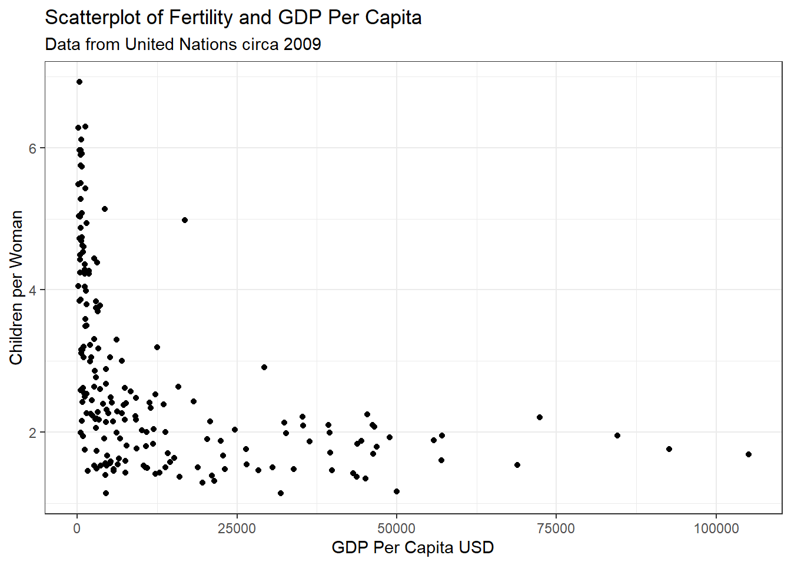
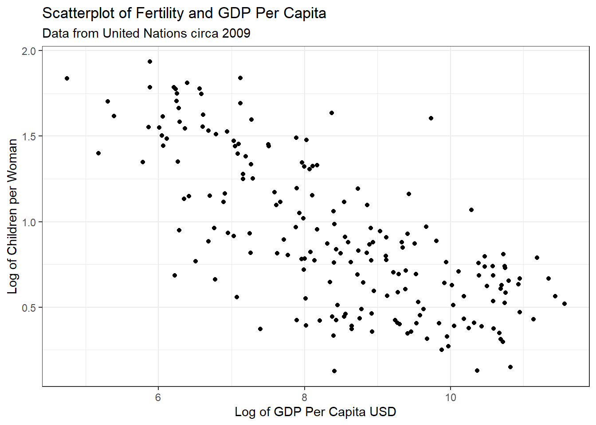

Code
library(alr4)
data(UN11)Tory Bartelloni
October 30, 2022
United Nations (Data file: UN11in alr4) The data in the file UN11 contains several variables, including ppgdp, the gross national product per person in U.S. dollars, and fertility, the birth rate per 1000 females, both from the year 2009…We will study the dependence of fertility on ppgdp.
Identify the predictor and the response.
Answer: The predictor variable in this scenario is ppgdp and the response or dependent variable will be fertility.
Draw the scatterplot of fertility on the vertical axis versus ppgdp on the horizontal axis and summarize the information in this graph. Does a straight-line mean function seem to be plausible for a summary of this graph?

The data do not appear to have a linear relationship. There is a steep decrease in fertility as GDP per capita increases from closer to 0 to about 15,000 and then a much slower rate of decrease to the upper bounds of the data.
Draw the scatterplot of log(fertility) versus log(ppgdp) using natural logarithms. Does the simple linear regression model seem plausible for a summary of this graph? If you use a different base of logarithms, the shape of the graph won’t change, but the values on the axes will change.

The relationship with the natural log of both variables appears to have a much closer resemblance to a linear relationship. From appearance only I would be confident a simple linear relationship could be applied to this data.
Annual income, in dollars, is an explanatory variable in a regression analysis. For a British version of the report on the analysis, all responses are converted to British pounds sterling (1 pound equals about 1.33 dollars, as of 2016).
How, if at all, does the slope of the prediction equation change?
Answer: The slope coefficient would decrease because the units used to measure x would increase in the conversion by a factor of ~1.33, but the unit measure of y would stay the same so the same change in y would be observed over “larger” distances of x units.
How, if at all, does the correlation change?
Answer: The correlation does not change. The old x and new x are perfectly correlated so would share the same relationship with y.
Can Southern California’s water supply in future years be predicted from past data? Draw the scatterplot matrix for these data and summarize the information available from these plots.
Error in library(GGally): there is no package called 'GGally'Error in ggpairs(water, columns = 2:8): could not find function "ggpairs"The data show us several of the events are strongly correlated with each other. The first three locations (APMAM, APSAD, and APSLAKE) have correlated precipitation rates, but do not share a correlated relationship with stream runoff at the location in Bishop, California. The next three locations (OPBPC, OPRC, and OPSLAKE) are similarly correlated with each other and furthermore are strongly correlated with the runoff measured at the location at Bishop. From the information available here we could conclude that the precipitation rate at any of the first three locations could help predict the precipitation rate of the other, but not the runoff rate at the measured location. As opposed to the last three where measures of precipitation could help predict both rates at the other sites and the runoff at Bishop. Worthy of note is that the OPSLAKE precipitation is the best predictor of runoff.
In the website and online forum RateMyProfessors.com, students rate and comment on their instructors. Create a scatterplot matrix of these five variables. Provide a brief description of the relationships between the five ratings.
Error in ggpairs(Rateprof, columns = 8:12): could not find function "ggpairs"First thing to notice is that all of the attributes have positive and statistically significant correlations, including raterInterest. We can also see that the average rating for quality, helpfulness, and clarity have strong positive relationships with each having an r > 0.92. Next we may note that easiness has a moderate positive relationship with all attributes other than raterInterest where the relationship is less strong. Lastly, we see a moderate positive relationship for quality, helpfullnes, and clarity with raterInterest indicating that all of the ratings are likely influenced by how interested the rater was in the class.
For the student.survey data file in the smss package, conduct regression analyses relating (by convention, y denotes the outcome variable, x denotes the explanatory variable) (i) y = political ideology and x = religiosity, (ii) y = high school GPA and x = hours of TV watching.
Graphically portray how the explanatory variable relates to the outcome variable in each of the two cases
We will fist look at the relationship between political ideology and frequency of religious attendance.
student.survey.hw %>%
ggplot() +
geom_point(aes(x=re, y=pi)) +
geom_smooth(aes(x=reg2, y=pol2), method="lm") +
theme_bw() +
labs(title = "Political Ideology and Religiosity",
subtitle="How religious attendance relates to self-identified political ideology",
x="Frequency of Religious Attendance",
y="Political Ideology")Now we will look at the relationship between hours of typical number of hours of TV watched (weekly) and high school GPA.
Summarize and interpret results of inferential analyses.
First, let’s examine the political ideology and religious attendance model. Below is the summary of the model.
Call:
lm(formula = pol2 ~ reg2, data = student.survey.hw)
Residuals:
Min 1Q Median 3Q Max
-2.81243 -0.87160 0.09882 1.12840 3.09882
Coefficients:
Estimate Std. Error t value Pr(>|t|)
(Intercept) 0.9308 0.4252 2.189 0.0327 *
reg2 0.9704 0.1792 5.416 1.22e-06 ***
---
Signif. codes: 0 '***' 0.001 '**' 0.01 '*' 0.05 '.' 0.1 ' ' 1
Residual standard error: 1.345 on 58 degrees of freedom
Multiple R-squared: 0.3359, Adjusted R-squared: 0.3244
F-statistic: 29.34 on 1 and 58 DF, p-value: 1.221e-06The model is statistically significant, with a < 0.01 p-value for religious attendance. A small amount of the variance in political ideology is explained by the frequency of religious attendance with an R2 of 0.336. The relationship is positive with a one unit increase in religious attendance frequency resulting in an expected increase (toward more conservative) of 0.97 units in political ideology. What we can infer from this model is that people who attend religious services more often are expected to be more conservative in their political ideology. Without more information I would not conclude this is a causal relationship and would want to further examine the relationship, including whehter the relationship could be inferred in the reverse.
Now let’s examine the high school GPA and TV watching habits model. Below is the summary of the model.
Call:
lm(formula = hi ~ tv, data = student.survey.hw)
Residuals:
Min 1Q Median 3Q Max
-1.2583 -0.2456 0.0417 0.3368 0.7051
Coefficients:
Estimate Std. Error t value Pr(>|t|)
(Intercept) 3.441353 0.085345 40.323 <2e-16 ***
tv -0.018305 0.008658 -2.114 0.0388 *
---
Signif. codes: 0 '***' 0.001 '**' 0.01 '*' 0.05 '.' 0.1 ' ' 1
Residual standard error: 0.4467 on 58 degrees of freedom
Multiple R-squared: 0.07156, Adjusted R-squared: 0.05555
F-statistic: 4.471 on 1 and 58 DF, p-value: 0.03879The model here is statistically significant with a p = 0.039 so under the 0.05 standard threshold. On the other hand, the model explans very little of the variation in high school GPA with an R2 of 0.072. The relationship is negative with a one hour increase in average weekly TV watching resulting in an expected decrease in high school GPA of 0.02. With such a low R2 I would hesitate to conclude any strong evidence in an explanatory relationship, while observing that they do have a statistically significant correlation.
---
title: "DACSS 603: Homework 3"
author: "Tory Bartelloni"
desription: "Homework 3"
date: "10/30/2022"
format:
html:
toc: true
code-fold: true
code-copy: true
code-tools: true
execute:
echo: true
warning: false
categories:
- hw3
- Tory Bartelloni
---
# Question 1
*United Nations (Data file: UN11in alr4) The data in the file UN11 contains several variables, including ppgdp, the gross national product per person in U.S. dollars, and fertility, the birth rate per 1000 females, both from the year 2009...We will study the dependence of fertility on ppgdp.*
```{r}
library(alr4)
data(UN11)
```
## 1.1.1
*Identify the predictor and the response.*
**Answer:** The predictor variable in this scenario is *ppgdp* and the response or dependent variable will be *fertility*.
## 1.1.2
*Draw the scatterplot of fertility on the vertical axis versus ppgdp on the horizontal axis and summarize the information in this graph. Does a straight-line mean function seem to be plausible for a summary of this graph?*
```{r}
library(dplyr)
library(ggplot2)
UN11 %>%
ggplot(aes(x=ppgdp, y=fertility)) +
geom_point() +
theme_bw() +
labs(title="Scatterplot of Fertility and GDP Per Capita",
subtitle="Data from United Nations circa 2009",
x="GDP Per Capita USD",
y="Children per Woman")
```
The data do not appear to have a linear relationship. There is a steep decrease in fertility as GDP per capita increases from closer to 0 to about 15,000 and then a much slower rate of decrease to the upper bounds of the data.
## 1.1.3
*Draw the scatterplot of log(fertility) versus log(ppgdp) using natural logarithms. Does the simple linear regression model seem plausible for a summary of this graph? If you use a different base of logarithms, the shape of the graph won’t change, but the values on the axes will change.*
```{r}
UN11 %>%
ggplot(aes(x=log(ppgdp), y=log(fertility))) +
geom_point() +
theme_bw() +
labs(title="Scatterplot of Fertility and GDP Per Capita",
subtitle="Data from United Nations circa 2009",
x="Log of GDP Per Capita USD",
y="Log of Children per Woman")
```
The relationship with the natural log of both variables appears to have a much closer resemblance to a linear relationship. From appearance only I would be confident a simple linear relationship could be applied to this data.
# Question 2
*Annual income, in dollars, is an explanatory variable in a regression analysis. For a British version of the report on the analysis, all responses are converted to British pounds sterling (1 pound equals about 1.33 dollars, as of 2016).*
## Q2A
*How, if at all, does the slope of the prediction equation change?*
**Answer:** The slope coefficient would decrease because the units used to measure *x* would increase in the conversion by a factor of ~1.33, but the unit measure of *y* would stay the same so the same change in *y* would be observed over "larger" distances of *x* units.
## Q2B
*How, if at all, does the correlation change?*
**Answer:** The correlation does not change. The old *x* and new *x* are perfectly correlated so would share the same relationship with *y*.
# Question 3
*Can Southern California’s water supply in future years be predicted from past data? Draw the scatterplot matrix for these data and summarize the information available from these plots.*
```{r}
data(water)
library(GGally)
ggpairs(water, columns=2:8) + theme_bw()
```
The data show us several of the events are strongly correlated with each other. The first three locations (APMAM, APSAD, and APSLAKE) have correlated precipitation rates, but do not share a correlated relationship with stream runoff at the location in Bishop, California. The next three locations (OPBPC, OPRC, and OPSLAKE) are similarly correlated with each other and furthermore are strongly correlated with the runoff measured at the location at Bishop. From the information available here we could conclude that the precipitation rate at any of the first three locations could help predict the precipitation rate of the other, but not the runoff rate at the measured location. As opposed to the last three where measures of precipitation could help predict both rates at the other sites and the runoff at Bishop. Worthy of note is that the OPSLAKE precipitation is the best predictor of runoff.
# Question 4
*In the website and online forum RateMyProfessors.com, students rate and comment on their instructors. Create a scatterplot matrix of these five variables. Provide a brief description of the relationships between the five ratings.*
```{r}
data(Rateprof)
ggpairs(Rateprof, columns = 8:12) + theme_bw()
```
First thing to notice is that all of the attributes have positive and statistically significant correlations, including *raterInterest*. We can also see that the average rating for *quality*, *helpfulness*, and *clarity* have strong positive relationships with each having an *r* > 0.92. Next we may note that *easiness* has a moderate positive relationship with all attributes other than *raterInterest* where the relationship is less strong. Lastly, we see a moderate positive relationship for *quality*, *helpfullnes*, and *clarity* with *raterInterest* indicating that all of the ratings are likely influenced by how interested the rater was in the class.
# Question 5
*For the student.survey data file in the smss package, conduct regression analyses relating (by convention, y denotes the outcome variable, x denotes the explanatory variable)*
*(i) y = political ideology and x = religiosity,*
*(ii) y = high school GPA and x = hours of TV watching.*
```{r}
library(smss)
data(student.survey)
student.survey.hw <- student.survey
student.survey.hw$reg2 <- as.numeric(student.survey.hw$re)
student.survey.hw$pol2 <- as.numeric(student.survey.hw$pi)
pol_reg_mod <- lm(pol2 ~ reg2, data=student.survey.hw)
gpa_tv_mod <- lm(hi ~ tv, data=student.survey.hw)
```
## Q5A
*Graphically portray how the explanatory variable relates to the outcome variable in each of the two cases*
We will fist look at the relationship between political ideology and frequency of religious attendance.
```{r}
student.survey.hw %>%
ggplot() +
geom_point(aes(x=re, y=pi)) +
geom_smooth(aes(x=reg2, y=pol2), method="lm") +
theme_bw() +
labs(title = "Political Ideology and Religiosity",
subtitle="How religious attendance relates to self-identified political ideology",
x="Frequency of Religious Attendance",
y="Political Ideology")
```
Now we will look at the relationship between hours of typical number of hours of TV watched (weekly) and high school GPA.
```{r}
student.survey.hw %>%
ggplot(aes(x=tv, y=hi)) +
geom_point() +
geom_smooth(method="lm") +
theme_bw() +
labs(title = "High School GPA and TV Watching Habits",
subtitle="How typical hours of TV watching relates to high school GPA",
x="Hours of TV Watched\n(Weekly Average)",
y="High School GPA")
```
## Q5B
*Summarize and interpret results of inferential analyses.*
First, let's examine the political ideology and religious attendance model. Below is the summary of the model.
```{r}
summary(pol_reg_mod)
```
The model is statistically significant, with a < 0.01 p-value for religious attendance. A small amount of the variance in political ideology is explained by the frequency of religious attendance with an *R^2^* of 0.336. The relationship is positive with a one unit increase in religious attendance frequency resulting in an expected increase (toward more conservative) of 0.97 units in political ideology. What we can infer from this model is that people who attend religious services more often are expected to be more conservative in their political ideology. Without more information I would not conclude this is a causal relationship and would want to further examine the relationship, including whehter the relationship could be inferred in the reverse.
Now let's examine the high school GPA and TV watching habits model. Below is the summary of the model.
```{r}
summary(gpa_tv_mod)
```
The model here is statistically significant with a *p* = 0.039 so under the 0.05 standard threshold. On the other hand, the model explans very little of the variation in high school GPA with an *R^2^* of 0.072. The relationship is negative with a one hour increase in average weekly TV watching resulting in an expected decrease in high school GPA of 0.02. With such a low *R^2^* I would hesitate to conclude any strong evidence in an explanatory relationship, while observing that they do have a statistically significant correlation.